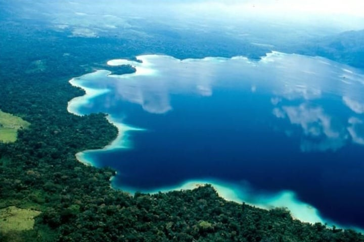

San Cristobal de las Casas, Chiapas San Cristóbal de las Casas cuenta con una diversidad étnica y tradición colonial, que muestra sus tesoros arquitectónicos en diversas edificaciones de los siglos XVI, XVII y XVIII. Su edificación siguió un proceso similar al de otras ciudades coloniales que se crearon en el territorio novohispano. En primer término se trazó la plaza principal, a cuyo entorno se designaron los lugares que ocuparían los principales edificios.Alrededor de su plaza se encuentran la catedral de fachada barroca al estilo centroamericano, el neoclásico palacio municipal, los portales, la iglesia de San Nicolás, con el estilo que más identifica a la arquitectura religiosa colonial de Chiapas y la casa de la Sirena con fachada de inspiración plateresca del siglo XVI. Especialmente interesante es el conjunto formado por el convento dominico y el templo de La Caridad unidos con la Catedral y la Plaza 31 de marzo por el andador Eclesiástico norte, principal eje monumental de la ciudad.
Centro de Textiles del Mundo Maya
Reservas Ecologica y Orquideario
Asociacion Cultural Na Bolom
El Arcotete
Templo de Santo Domingo

Museo del Ambar

Templo de San Cristobal
Mirador dela Escuela SolMaya

Laguna Miramar
Iglesia del Cerrito
Centro Historico